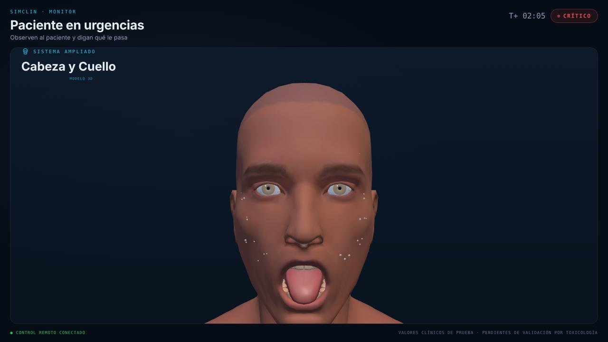
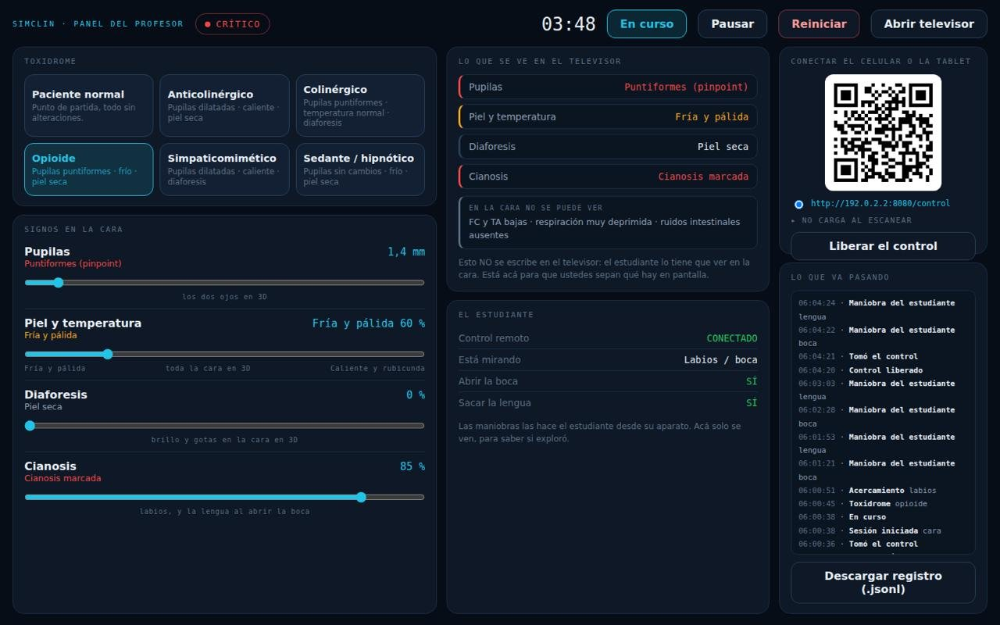
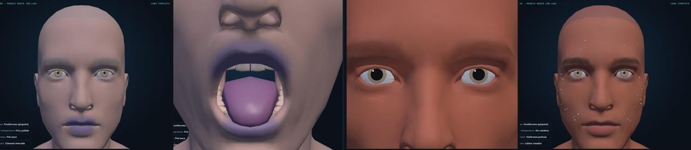

Caso 04 · Simulación clínica · Taller 7
Ponerle cara al maniquí.
AntidoTek le pone cara al maniquí del laboratorio de simulación para que el estudiante de toxicología aprenda a reconocer un envenenamiento mirando al paciente, en lugar de que se lo cuenten.
El maniquí tiene pulso, pero su cara no cambia.
Cuatro de los signos con los que se diagnostica una intoxicación están en la cara: las pupilas, el color y la temperatura de la piel, la diaforesis y la cianosis. El maniquí del laboratorio tiene pulso, respiración y un monitor con seis parámetros, pero su cara es una pieza de plástico que no cambia.
Se lo tienen que imaginar
Hoy el estudiante no ve los signos que más pesan en el diagnóstico: el profesor se los dice en voz alta. Lo que no entrena es el gesto clínico real, que es mirar al paciente y decidir.
No se resuelve comprando equipo
Los maniquíes de gama alta cuestan decenas de miles de dólares y, aun así, no cambian de toxidrome en vivo durante la práctica.
El producto salió de una tabla.
Los médicos de cuidados intensivos nos entregaron la tabla de toxidromes con la que trabajan, con seis columnas de signos. Los seis cuadros clínicos que trae AntidoTek salen de ahí, no los inventamos: paciente normal, anticolinérgico, colinérgico, opioide, simpaticomimético y sedante/hipnótico.
Lo que una cara puede mostrar
De las seis columnas, una cara en 3D solo puede mostrar tres: pupilas, temperatura como color de piel y diaforesis. Frecuencia cardíaca y tensión, respiración y ruidos intestinales no se ven.
Dos signos añadidos
La cianosis, cara visible de la depresión respiratoria, y el estado de conciencia, el signo más visible de todos. Los dos están documentados como añadidos nuestros.
Supuestos antes de construir
Escribimos catorce supuestos de diseño y, junto a cada uno, qué resultado nos haría darlo por falso. Después probamos el prototipo con nueve estudiantes.
“Un producto que declare qué no puede hacer.”
Lo que la cara no puede mostrar no se simula: queda escrito en el panel del profesor para que lo diga él. Preferimos eso antes que fingir datos clínicos.
Un televisor junto a la camilla, el control en manos del estudiante.
AntidoTek pone una cara en 3D que responde en vivo. No reemplaza al maniquí, lo acompaña: el maniquí sigue aportando el cuerpo, el pulso y el monitor, y AntidoTek aporta lo único que le falta, la cara.
Quién tiene el control
La decisión que define el producto: lo tiene el estudiante, desde su celular. Si el profesor le abre la boca al paciente, le da la respuesta; si lo hace el estudiante, está explorando.
El rol del profesor
Arma el cuadro clínico que quiere trabajar ese día y observa qué exploró el estudiante.
Tres pantallas sobre un único estado del paciente.
- 01
Televisor del salón
Dibuja la cara en 3D dentro del navegador. Los signos son un shader pintado sobre la malla, no un video, así que cuando el profesor mueve un control la cara cambia al instante. Ahí va también el monitor, con ECG, alarma y ruidos abdominales.
Sala - 02
Celular del estudiante
Entra escaneando un QR, sin instalar nada. Elige dónde mirar y qué maniobra hacer: abrir la boca, sacar la lengua o auscultar el abdomen.
Estudiante - 03
Panel del profesor
Cabe en una sola pantalla sin scroll, con los seis toxidromes a un clic y deslizadores para los cinco signos. Muestra lo que el estudiante está mirando y permite descargar el registro de la sesión.
Profesor
Todo vive en la red del salón
Un servidor local en el computador de la sala, en Python, con un gemelo en Node por si no hay Python. No hace falta internet, ni siquiera la librería 3D, que va dentro del propio archivo.


Los cinco signos y sus escalas
- 01
Pupilas
De 0,8 a 9,0 mm, dibujadas sobre el iris en los dos ojos en 3D.
Ojos - 02
Piel y temperatura
De fría y pálida a caliente y rubicunda, en toda la cara.
Piel - 03
Diaforesis
De 0 a 100 %, como brillo y gotas en la cara.
Cara - 04
Cianosis
De 0 a 100 %, en los labios y en la lengua al abrir la boca.
Labios - 05
Estado de conciencia
De alerta a estuporoso, en párpados, mirada y boca.
Conciencia

Lo que más cambió el producto fue lo que le quitamos.
Seis decisiones cuentan esa historia. El hilo que las une: cada cambio le quitó poder al profesor o al sistema y se lo dio al estudiante, o eliminó algo que fingía ser información.
- 01
El estudiante abre la boca, no el profesor
Antes lo hacía el profesor. Si explora él, le está dando la respuesta.
Control - 02
Botón en vez de deslizador
Las maniobras eran graduales y pasaron a abierto o cerrado. Explorar no es dosificar un hallazgo.
Maniobras - 03
Controles sueltos en vez de casos precargados
El profesor arma el cuadro que necesita para su clase sobre la tabla de toxidromes.
Casos - 04
Vitales ocultos hasta tener el dato real
Un número inventado al lado de un paciente estorba más de lo que enseña.
Vitales - 05
Solo cabeza y cuello
Era lo único que el modelo muestra de verdad, así que se quitó la vista del cuerpo entero.
Vista - 06
Un panel sin scroll
Pasó de 2000 px con scroll a una sola pantalla. En clase, o el control está a la vista o no existe.
Panel
Probado con estudiantes y validado en el laboratorio.
Supuestos confirmados
De los supuestos puestos a prueba, cinco quedaron confirmados: la cara se lee como hallazgos del paciente y no como otro monitor, un solo celular alcanza, la cianosis se lee como signo clínico, las subvistas se descubren solas y el televisor se lee bien desde donde se para el grupo.
El que no se cumplió
Supusimos que una sola persona manejaría el celular mientras examinaba al paciente. El grupo se reparte los roles y otro estudiante maneja el control. No rompió nada: explica por qué un solo control no deja a nadie por fuera.
Validación institucional
El 28 de octubre el coordinador de los simuladores de Medicina lo usó él mismo, sin que se lo contáramos. Pidió un resumen corto del caso en pantalla, se comprometió a gestionar la reunión con el ingeniero del simulador para destrabar el SDK y nos invitó a presentarlo en una conferencia en Perú.
El MVP quedó construido
Cara en 3D con los cuatro signos faciales y el de conciencia, control del estudiante en celular y tablet, panel del profesor con los seis toxidromes, sonido del monitor, ruidos abdominales y registro descargable de cada sesión. Ya está montado en el laboratorio, al lado del maniquí.
Liderar sin perder de vista al estudiante.
Fui líder del proyecto, con funciones cercanas a las de un product manager.
Detectar el problema
Ayudé en la investigación para encontrar qué le faltaba a los simuladores actuales.
Idear la solución y el producto
Participé en definir la solución y el producto que íbamos a mostrar.
Liderar el proyecto
Asumí las funciones de líder: ordenar prioridades, decisiones y entregas del equipo.
Proyecto entregado.
AntidoTek se entregó al cierre del Taller 7, con el producto montado en el laboratorio de simulación, al lado del maniquí y corriendo en el computador y el televisor que la sala ya tiene.
¿Te cuento cómo lo hicimos?
Si te interesa el proceso detrás de AntidoTek, escríbeme y lo conversamos.
Escríbeme ↗